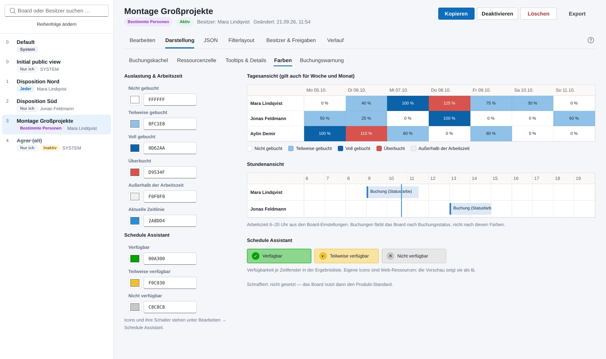
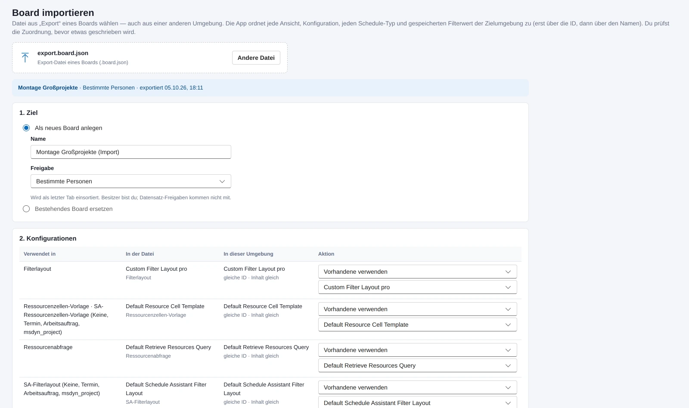

Die Buchungsvorlage eines Schedule Boards ist ein Stück HTML mit Platzhaltern in geschweiften Klammern. Die Ressourcenzelle ist eine Handlebars-Vorlage in einer eigenen Konfigurationszeile. Die Tooltips sind Kennungen von Ansichten. Bis zum 1. Oktober ließ sich das alles in der App als Freitext bearbeiten, und ob das Ergebnis im Board gut aussieht, zeigte sich erst nach dem Speichern, im Board, mit echten Buchungen. Für eine Vorlage, die vier Boards teilen, ist das kein Arbeitsablauf, das ist ein Experiment an der Disposition.

Eine Vorschau, die nicht lügt
Am Abend des 1. Oktober kam der Reiter „Darstellung“ dazu. Er zeigt jede sichtbare Einstellung eines Boards neben einer Vorschau: die Buchungskachel je Schedule-Typ in einer Stundenansicht mit Dauer, Statusfarbe und Zeilenhöhe, die Ressourcenzelle in vier Zuständen und in der Ansicht des Schedule Assistant, die Tooltips aus den Spalten der hinterlegten Ansichten, die Farben, die Buchungswarnung. Felder für die Kachel wählt man per Klick über die Beziehungen der Buchung, und die App baut den Pfad aus den Schemanamen so zusammen, wie die Vorlage ihn erwartet. Der Designer sagt dazu, ob eine Vorlage dem Board gehört, vom Default-Board geerbt ist oder ob der Produkt-Standard greift, und er prüft auf JavaScript und falsche Platzhalter.
Zwei Entscheidungen haben die Vorschau teurer gemacht, als sie hätte sein müssen. Vorlagen-HTML aus Dataverse läuft in einem Rahmen mit leerem Sandbox-Attribut, ohne Skripte, ohne Zugriff auf die App, ohne CSS, das nach außen dringt. Und die Zellvorlage rendert ein eigener kleiner Handlebars-Interpreter statt der Bibliothek, weil die Bibliothek ihre Vorlagen mit dynamisch erzeugtem Code kompiliert, und das will ich in einer App, die fremde Vorlagen anzeigt, nicht haben. Nachgebildet sind nur die Helfer aus den Beispielen von Microsoft. Alles andere wird gemeldet statt geraten. Die Vorschau nähert das Board an, mehr nicht: Das CSS des Boards ist außerhalb des Boards nicht verfügbar, und die Treue habe ich an den Beispielen von Microsoft abgeglichen, nicht an den Vorlagen des Kunden.
Ein Board besteht fast nur aus Kennungen, und nur ein Teil davon ist in jeder Umgebung gleich.
Vierhundert Pixel, die im Host fehlten
Lokal sah der Reiter gut aus. In der Testumgebung, im Host von Power Apps, war er gequetscht: Vorlagen-Editor ohne Zeilenumbruch, Vorschau mit Scrollbalken, abgeschnittene Farbvorschau. Die Umbrüche hingen an der Fensterbreite, und im Host nehmen Rahmen und Board-Liste rund vierhundert Pixel weg. Also blieben zwei Spalten stehen, obwohl der Platz nicht reichte. Seit dem späten Abend des 1. Oktober richten sich die Umbrüche nach der Breite des Darstellungsbereichs selbst, über Container-Abfragen, und unter rund 1500 Pixeln stehen Code, Vorschau und Feldliste untereinander. Am selben Tag war die Oberfläche auf Fluent UI v9 umgezogen, dieselbe Bibliothek, auf der die Modern Controls von Power Apps aufbauen, weil die nativen Browser-Steuerelemente neben Power Apps altbacken aussahen. Eine Stolperfalle davon bleibt dokumentiert: Der Anbieter von Fluent kopiert seine Klasse auf jedes Popup, und wer seine Grundstile an diese Klasse hängt, bekommt ein leeres Overlay über der ganzen Seite.
Am 2. Oktober kam der Baukasten. Die Buchungsvorlage war ein großes, meist leeres Textfeld mit rohem HTML. Die echten Vorlagen haben aber fast immer dieselbe Form: ein Rahmen, Zeilen mit Symbol oder Text und einem fetten Feld, getrennt durch Zeilenumbrüche. Das lässt sich ohne HTML bearbeiten. Eine Zeile je Kachelzeile, Felder als Chips mit Anzeigenamen aus den Metadaten, Text in kleinen Eingabefeldern, Fett je Teil per Klick. Der Serialisierer schreibt im Stil der vorhandenen Vorlage zurück, mit ihren Rahmenattributen, ihrer Schreibweise des Fett-Tags und des Zeilenumbruchs, damit im Diff nur die Änderung steht. Vorlagen, die anders gebaut sind, öffnen als HTML. Gegen alle Vorlagen aus der Testumgebung des Kunden habe ich den Baukasten verlustfrei geprüft; der Test dafür liegt außerhalb des Repos, weil er die Vorlagen enthält.

Aus Kennungen wieder Namen machen
Das Board soll von der Testumgebung nach Produktion. Der erste Export hatte nur das JSON des Boards geschrieben, und das ist nutzlos: Ein Board besteht fast nur aus Kennungen, und nur ein Teil davon ist in jeder Umgebung gleich. Ansichten aus Solutions und die Standardkonfigurationen von Universal Resource Scheduling tragen überall dieselbe Kennung, die eigenen Konfigurationen, die Buchungs-Setups und die Datensätze in den gespeicherten Filtern nicht. Seit dem 1. Oktober schreibt der Export ein Paket: das Board mit allen Spalten, jede referenzierte Konfiguration mit ihrem Inhalt, dazu zu jeder Kennung das, woran man sie in einer anderen Umgebung wiedererkennt, Name und Tabelle der Ansicht, Tabelle des Schedule-Typs, Name der Zeitzone, Tabelle und Primärname des Datensatzes.
Der Import ordnet jede Kennung der Zielumgebung zu, erst über die Kennung, dann über den Namen, und zeigt jede Zeile zum Ändern. Konfigurationen werden verwendet, neu angelegt, mit dem Inhalt der Datei überschrieben oder leer gelassen, mit einem Vergleich des Inhalts und einer Warnung, welche Boards die Zeile noch nutzen. Was kein Gegenstück hat, fällt sauber weg: ein Ansichtsfeld wird geleert, ein Anforderungsbereich ohne Ansicht fällt ganz aus den Einstellungen, statt als tote Kennung zu bleiben. Ziel ist ein neues Board oder ein bestehendes, das ersetzt wird, mit demselben Diff wie beim Speichern. Nicht im Paket sind Freigaben, Besitzer und Verlauf; Benutzerkennungen sind je Umgebung verschieden, und das Zuordnen über E-Mail-Adressen steht auf der Liste.
Nach Produktion kam bis heute noch kein Board. Dafür muss die App dort laufen, mit eigener Konfiguration, und das tut sie erst nach einer ausdrücklichen Entscheidung des Kunden. Seit dem 2. Oktober hat die App eine Hilfe mit fünfzehn Abschnitten, als Panel über der App, damit ein ungespeicherter Entwurf beim Nachschlagen nicht verloren geht. Das meiste darin erklärt, was man der Oberfläche nicht ansieht: Vererbung vom Default-Board, geteilte Konfigurationen, Filterfelder ohne Wirkung. Alle Funktionen stehen auf der Produktseite.